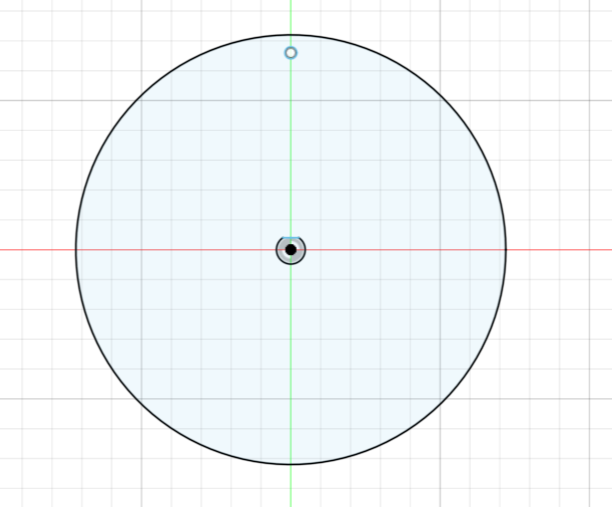
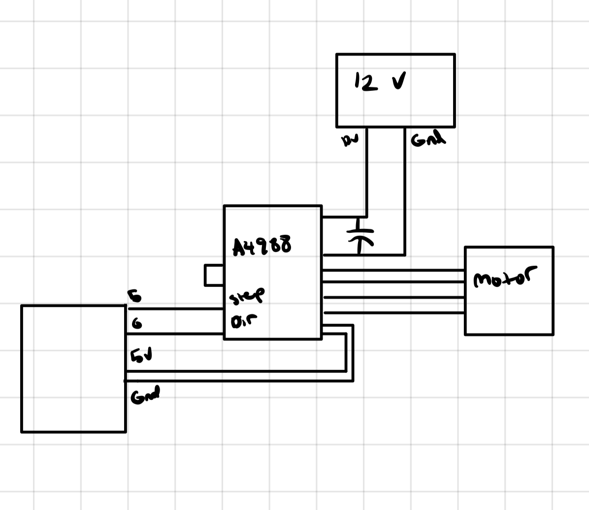

<div class="textcontainer">
<p class="margin"> </p>
<h3>Week 4: Microcontroller Programming</h3>
<p class="margin"> </p>
<div class="flexrow">
<a id="btn" href="wk4cr.zip" download>Download my code and CAD files from this week!
</a>
</div>
<p class="margin"> </p>
<h4>Assignment: Make an Arduino Do Something</h4>
For this assignment, I’ll fix up the kinetic hand sculpture and make it run using an arduino code that controls a stepper motor. First things first, to address the big problem with the sculpture, the movement it makes is incredibly small and not noticeable. The way I want to improve this is by adding a wheel with a longer radius to the axle of the motor so that when it turns, the motion it induces is larger. Here’s the wheel I modeled:
<p class="margin"> </p>
<div class="flexrow">

</div>
<p class="caption">Wheel to extend the radius of the motor.</p>
Once I put it on the axle, I attached the strings and gave it a try just cranking myself. The movement was much more noticeable which was good news! Next I wrote up a very simple stepper motor code that would turn the motor one way, stop and then turn it the other way (I figured this was the best way to not get the strings all tangled up which was another problem I had during week 3). I used the stepper library and here’s the code I came up with:
<pre><code style="background-color: #2d2b33;">
#include <Stepper.h>
const int stepsPerRevolution = 1000;
const int dirPin = 6;
const int stepPin = 5;
Stepper myStepper(stepsPerRevolution, dirPin, stepPin);
void setup() {
// Set the speed of the stepper motor
myStepper.setSpeed(60); // 60 RPM
}
void loop() {
// Turn one direction for 2 revolutions
myStepper.step(stepsPerRevolution * 2);
delay(1000);
// Change direction
digitalWrite(dirPin, !digitalRead(dirPin)); // Toggle direction
// Turn the other direction for 2 revolutions
myStepper.step(-stepsPerRevolution * 2);
delay(1000);
}
</code></pre>
As far as the circuitry, because I did this project after having done basically everything else in the course, I was really familiar with how to use a stepper motor and particularly an A4988 driver. The circuit is forever ingrained in my mind and I can make one in my sleep:
<p class="margin"> </p>
<div class="flexrow">

</div>
<p class="caption"> I have this image burned in my mind…
</p>
With everything coded and wired, here’s how the sculpture moved:
<p class="margin"> </p>
<div class="flexrow">
<video controls>
<source src="week4video.mp4" type="video/mp4">
</video>
</div>
<p class="caption">It moves!!</p>
One thing I noticed is that I had to clamp the pedestal down and hold the motor far away otherwise it would just move the sculpture and motor together until there was slack in the string, but as someone with very next to no ambition in the kinetic sculpture making industry, I am quite happy with this.
</div>